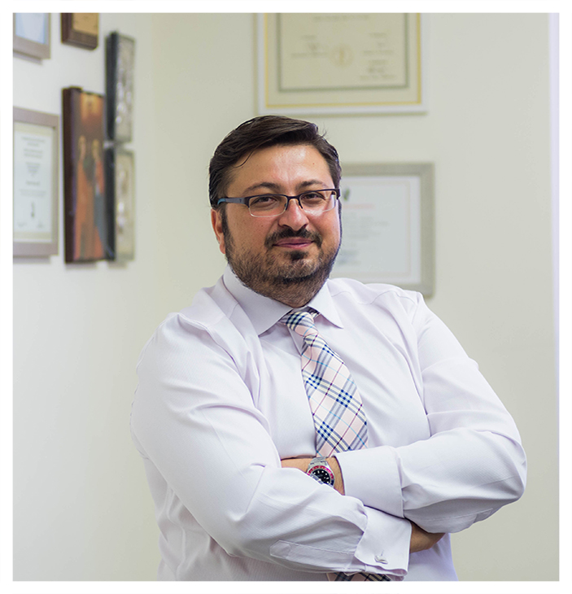

Obstetrician Surgeon Gynecologist · Athens & Nea Smyrni
Michael Rotas
MD, FACOG
Specialist in Maternal–Fetal Medicine with a decade of international experience in university hospitals in the USA and the United Kingdom for pregnancy and gynecological care that is safe, evidence-based and deeply human.

Obstetricians & Gynecologists
The Doctor
Why he is the right choice for you
Obstetrician Surgeon Gynecologist · Specialist in Maternal–Fetal Medicine
- Graduate of the Medical School of the University of Athens with multiple distinctions and scholarships.
- Trained in major university hospitals, including the State University of New York in Brooklyn — Maimonides Medical Center.
- Years of training and clinical experience in university hospitals in the USA and the United Kingdom.
- Worked at Memorial Sloan Kettering Cancer Center, one of the largest specialised oncology centres in the world.
- Awarded by the American Association of Gynecologic Laparoscopists (AAGL) for his outstanding surgical skills.
- Holder of the highest certification in Maternal–Fetal Medicine (Diploma in Fetal Medicine).
Patient Information
Comprehensive care,
at every stage of your life
Evidence-based information for expectant mothers and for women's gynecological health — from prenatal testing to family planning.
Pregnancy
Prenatal testing, everyday guidance during pregnancy, common pregnancy issues, labor and the postpartum period — clearly explained.
23 topics → 02Gynecology
The most common gynecological conditions and family planning options, with reliable, easy-to-read information.
18 topics → 03The Doctor
Dr. Michael Rotas, Obstetrician Surgeon Gynecologist and Specialist in Maternal–Fetal Medicine, trained at leading hospitals in the USA and the UK.
Read more →The Clinics
Two fully equipped spaces
At the clinics in Nea Smyrni and on Vas. Sofias Avenue, the full range of gynecological and obstetric examinations is offered.